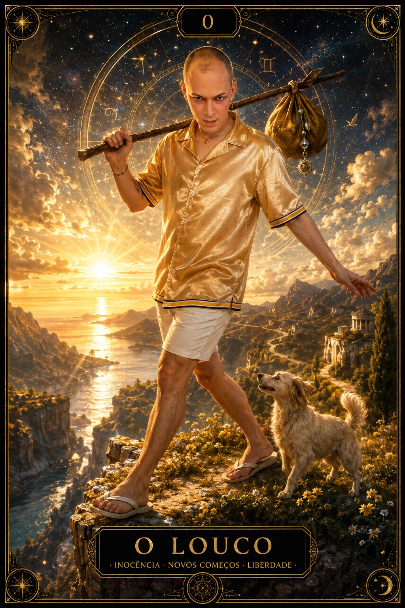

Os Arcanos Maiores contam uma jornada de transformação
Do impulso livre do Louco à integração do Mundo, estas 22 cartas apresentam encontros, escolhas, rupturas e aprendizados que podem ampliar a leitura de uma situação.
✦Cada carta ganha foco quando encontra uma pergunta, uma posição e um contexto.

O LOUCO · O PRIMEIRO PASSO
Cartas
22
Sequência
0–21
Orientação
Direta
Escala
Grandes temas
O QUE SÃO
Cartas que ampliam o tema central da leitura
Os Arcanos Maiores formam uma sequência numerada de 0 a 21. Suas imagens trabalham experiências humanas amplas: começar, escolher, construir, perder, transformar, recuperar esperança e concluir.
Quando um Arcano Maior aparece, ele não precisa anunciar um acontecimento inevitável. Ele pode destacar a profundidade do momento, o aprendizado em curso ou a postura que merece atenção naquela posição.
A JORNADA SIMBÓLICA
Quatro movimentos para compreender a sequência
0–5
Despertar e formar
O impulso inicial encontra recursos, intuição, criação, estrutura e ensinamentos.
6–10
Escolher e avançar
Relações, direção, coragem, busca interior e mudança colocam a vontade em movimento.
11–16
Reavaliar e transformar
Responsabilidade, pausa, encerramento, integração, apego e ruptura pedem verdade.
17–21
Reconstruir e integrar
Esperança, incerteza, clareza, despertar e conclusão reorganizam a experiência.
DO LOUCO AO MUNDO
Significado dos 22 Arcanos Maiores
Use cada síntese como porta de entrada e abra a página da carta para estudar símbolos, luz, desafio e aplicações em diferentes áreas.
Conclusão, integração e abertura para um novo ciclo.
COMO INTERPRETAR
Símbolo, posição e pergunta trabalham juntos
Comece descrevendo a imagem. Depois, reconheça o tema do Arcano e pergunte como ele se expressa na posição ocupada: recurso, desafio, conselho, origem ou possibilidade.
Na Divina Bruxa, as cartas aparecem sempre diretas. A mesma imagem pode revelar luz e tensão conforme o contexto, sem necessidade de inversão.